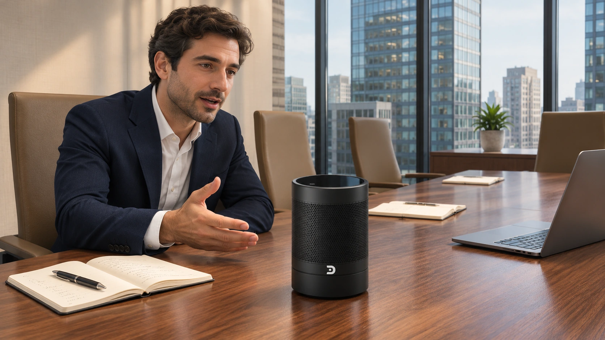
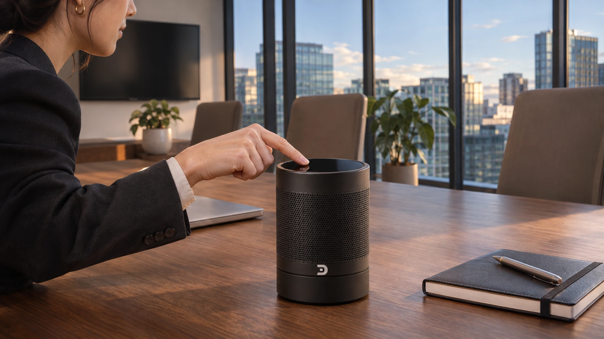
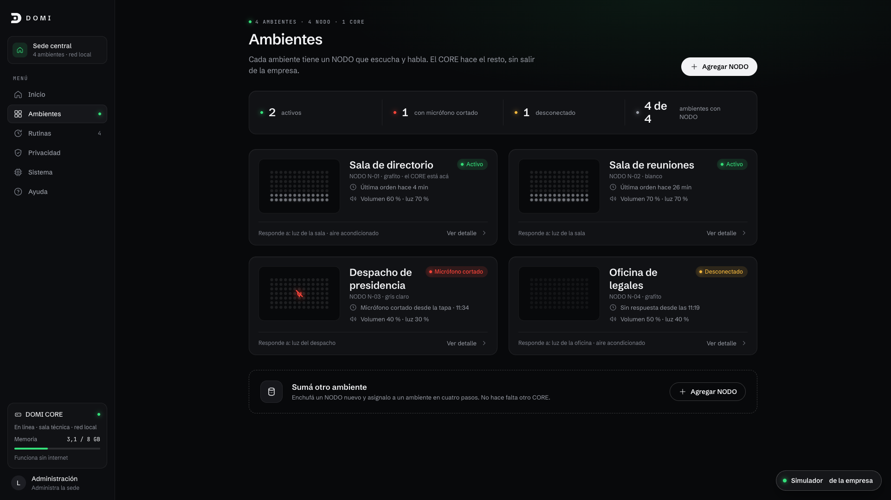
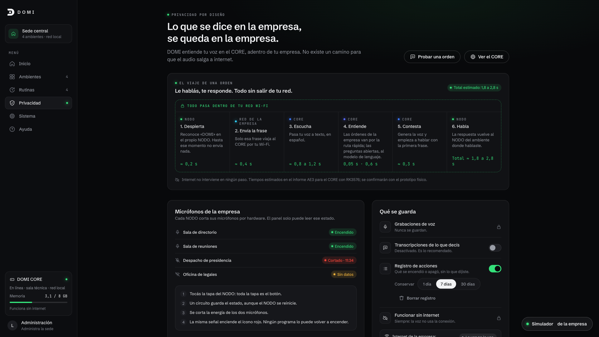
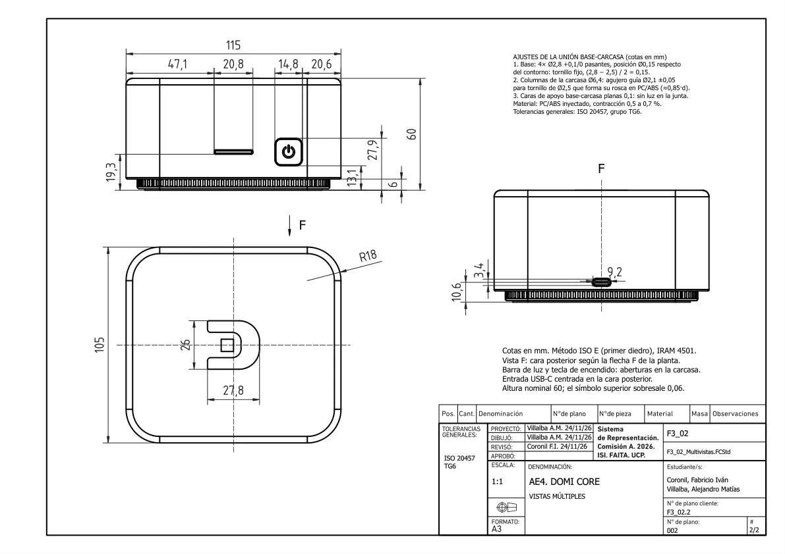
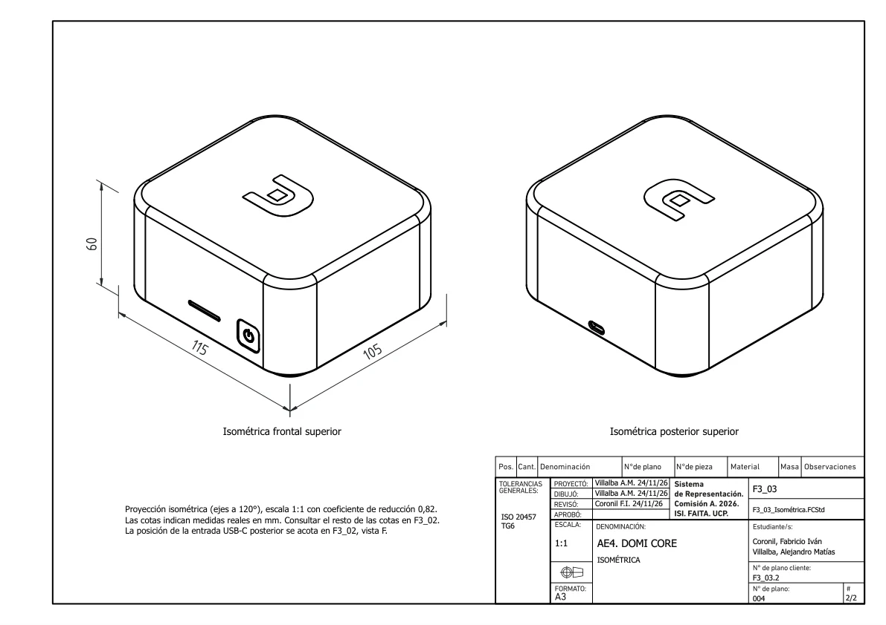
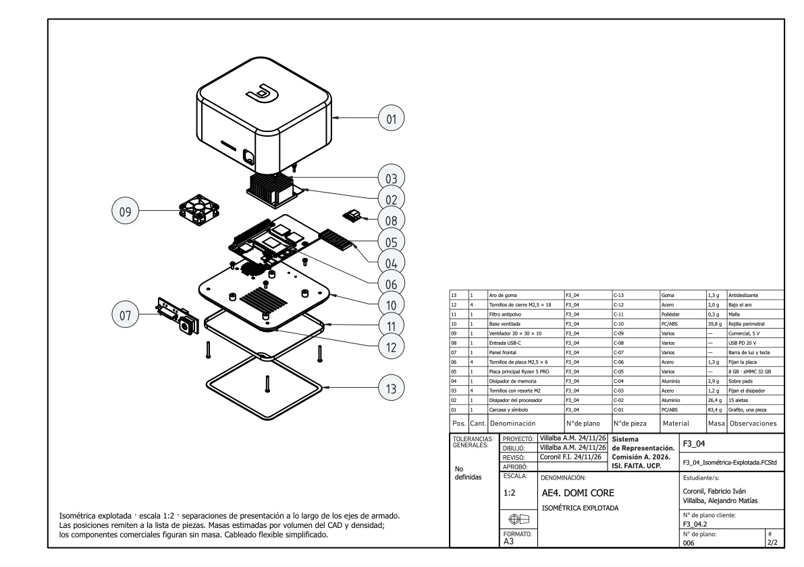
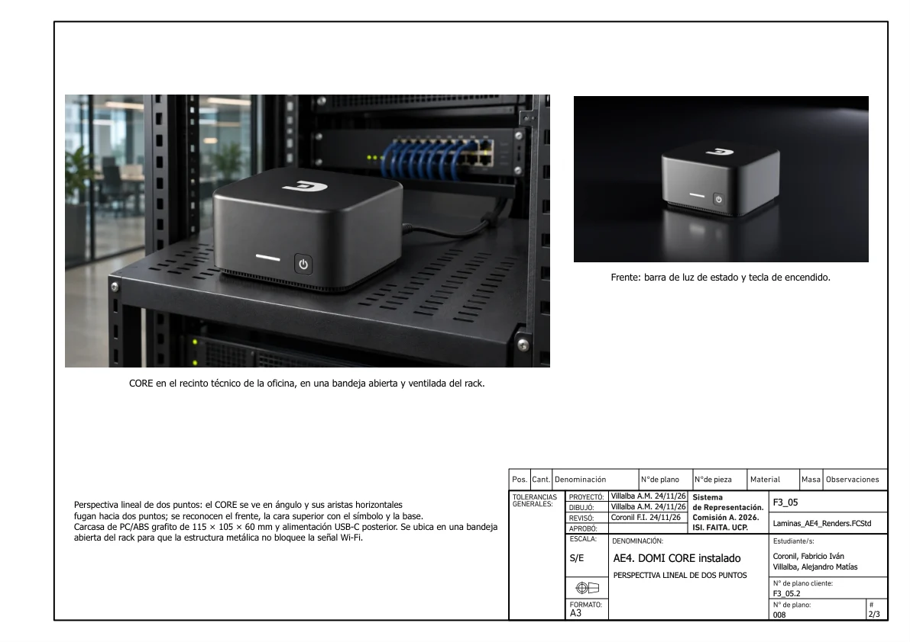

DOMI CORE
AMDRYZEN5PROUna unidad central por sede, con AMD Ryzen 5 PRO 8640U y 8 GB de LPDDR5x. Procesa la voz de todas las salas en la red local.
US$ 449
Cargando la vista 3D 0 %
DOMI · Asistente de voz local para empresas
La voz de tus reuniones se procesa dentro de la red de tu empresa.

Problema
Las empresas no usan asistentes de voz por miedo a perder privacidad: los conocidos mandan lo que oyen a la nube, y en una reunión de directorio o de finanzas eso es un riesgo. Mientras tanto, se sigue perdiendo tiempo en la reunión preparando la sala: pantalla, luces y equipos.
Solución
El NODO recibe el pedido en la sala y el CORE coordina la acción por la red local. El panel reúne los estados de los ambientes y el diseño prevé un control del micrófono en la tapa del NODO.
DOMI NODO
Dos micrófonos, un parlante de 50 mm y luz en la parte baja de la rejilla. La batería recargable te permite ubicarlo donde lo necesites.
Luz de estado

Privacidad
Toda la tapa es un botón. Al tocarla, el micrófono queda desconectado y el ícono se pone rojo. Ningún programa lo puede volver a encender: solo vos.
Simulación: esta página no usa tu micrófono.
DOMI CORE
El CORE del AE4 incorpora al diseño un AMD Ryzen 5 PRO 8640U. Reconoce la voz, interpreta el pedido y prepara la respuesta dentro de la red de la empresa.
Instalación
El CORE se instala en un lugar fijo, ventilado y conectado a la red. Su entrada de alimentación USB-C PD está atrás.
Diseño
El aire entra por adelante y sale por atrás, a través de una base que parece flotar.
Diseño · NODO
El parlante está debajo de la rejilla y los micrófonos cerca de la tapa. El módulo de batería se aloja en la base.
Diseño · CORE
Ryzen 5 PRO, disipadores de aluminio y ventilación por la base en una caja de 115 × 105 × 60 mm.
Tocá una parte para conocerla.

Cómo funciona
Ejemplo · no usa tu micrófono
VosDOMI, ¿qué quedó pendiente de la reunión?
Entiendependientes · reunión
DOMIQuedó pendiente cerrar el presupuesto y confirmar la próxima reunión.
Terminaciones
Todo cierra por debajo: en el NODO, bajo la base de silicona; en el CORE, bajo el aro de goma.
Colores
El símbolo DOMI cambia de tono para destacarse sobre cada color.
DOMI NODO
Se mueve entre salas sin cables y se carga por USB-C.
Precios y costos
Precios sugeridos de lanzamiento por unidad, sin impuestos ni instalación. El CORE se compra una vez por sede y cada sala nueva solo suma un NODO.
Una unidad central por sede, con AMD Ryzen 5 PRO 8640U y 8 GB de LPDDR5x. Procesa la voz de todas las salas en la red local.
US$ 449

Uno por sala. Ø96 × 138,6 mm, dos micrófonos, sonido en 360° y batería recargable integrada que se carga por USB-C.
US$ 59
Referencias de componentes de noviembre de 2026, sin cotización formal. La memoria es la parte que más aumentó en el último año. Catálogo EEBB · Ficha y precio DFRobot.
Especificaciones
DOMI frente al mercado
Los asistentes conocidos están pensados para la casa y mandan la voz a la nube. DOMI está pensado para la oficina y la voz no sale de la empresa.
Comparación con los parlantes Echo y Nest de uso doméstico, según el relevamiento del AE4. DOMI es un prototipo: sus datos son de diseño.
Renders de uso
Perspectivas interiores ilustrativas basadas en las salas y el mobiliario del piso 12.




Video del producto
El video final del AE4: un día de trabajo en la oficina con DOMI, de la primera reunión al panel de control.
Paso 1 · Diseño
Definimos la navegación, las tarjetas de ambientes y los estados de cada dispositivo.
Paso 2 · Panel final
Probá cómo se agrega un NODO, se revisa el estado de cada micrófono y se administran las luces y rutinas por sala.
Abrir panel completo

Documentación técnica
Nueve láminas A3 dibujadas en FreeCAD TechDraw. Tocá una para ver su PDF.
 01 · NODO · Vistas múltiplesFrente, planta, corte A-A, vista parcial F, detalle Y y detalle Z · 1:1, 5:1 y 1:2
El corte A-A, en el lugar de la vista lateral izquierda, muestra el pack de dos celdas dentro del anillo. Las alturas se acotan en paralelo desde el plano de apoyo y los diámetros, en la planta. El detalle Z ubica los cuatro pasos Ø2,8 +0,2/0 del anillo en un patrón de 57,98 × 57,98 mm.
01 · NODO · Vistas múltiplesFrente, planta, corte A-A, vista parcial F, detalle Y y detalle Z · 1:1, 5:1 y 1:2
El corte A-A, en el lugar de la vista lateral izquierda, muestra el pack de dos celdas dentro del anillo. Las alturas se acotan en paralelo desde el plano de apoyo y los diámetros, en la planta. El detalle Z ubica los cuatro pasos Ø2,8 +0,2/0 del anillo en un patrón de 57,98 × 57,98 mm.

02 · CORE · Vistas múltiplesFrente, planta y vista F · 1:1 La planta va debajo del frente, como corresponde al método ISO E. La cara posterior con la entrada USB-C se dibuja como vista F, indicada con flecha y letra sobre la planta. 03 · NODO · IsométricasFrontal superior y posterior superior · 1:1
Proyección isométrica con ejes a 120°. Las cotas siguen los ejes isométricos e indican la medida real del NODO: Ø96, 138,6 y el módulo de batería de 28,6.
03 · NODO · IsométricasFrontal superior y posterior superior · 1:1
Proyección isométrica con ejes a 120°. Las cotas siguen los ejes isométricos e indican la medida real del NODO: Ø96, 138,6 y el módulo de batería de 28,6.

04 · CORE · IsométricasFrontal superior y posterior superior · 1:1 Las medidas generales 115 × 105 × 60 se acotan sobre las caras del CORE. La vista posterior muestra la entrada USB-C, acotada en la lámina 02. 05 · NODO · Isométrica explotada16 posiciones y lista de piezas · 1:2
Las piezas se separan sobre el eje de armado, de la base de silicona a la tapa táctil. Cada globo remite a la lista con cantidad, material y masa estimada.
05 · NODO · Isométrica explotada16 posiciones y lista de piezas · 1:2
Las piezas se separan sobre el eje de armado, de la base de silicona a la tapa táctil. Cada globo remite a la lista con cantidad, material y masa estimada.

06 · CORE · Isométrica explotada13 posiciones y lista de piezas · 1:2 Se ve el interior: la placa con el Ryzen 5 PRO, los disipadores con sus tornillos con resorte, el ventilador, el panel frontal, la entrada USB-C y el cierre inferior. 07 · NODO en usoPerspectiva lineal de dos puntos
Renders en la sala de directorio, en finanzas y en operaciones. Las aristas de la mesa y del ventanal fugan hacia dos puntos sobre la línea de horizonte.
07 · NODO en usoPerspectiva lineal de dos puntos
Renders en la sala de directorio, en finanzas y en operaciones. Las aristas de la mesa y del ventanal fugan hacia dos puntos sobre la línea de horizonte.

08 · CORE instaladoPerspectiva lineal de dos puntos El CORE en el recinto técnico de la oficina. Visto en ángulo, se leen a la vez el frente, la cara superior con el símbolo y la base ventilada. 09 · DOMI en la oficinaPerspectiva lineal de tres puntos
Vista desde arriba del piso: además de los dos puntos de fuga horizontales, las verticales convergen en un tercero. Muestra un CORE central y un NODO por sala.
09 · DOMI en la oficinaPerspectiva lineal de tres puntos
Vista desde arriba del piso: además de los dos puntos de fuga horizontales, las verticales convergen en un tercero. Muestra un CORE central y un NODO por sala.
Simulación · piso 12
Subís en el ascensor, recorrés las cuatro salas en primera persona y ves cómo cada NODO habla con el CORE.